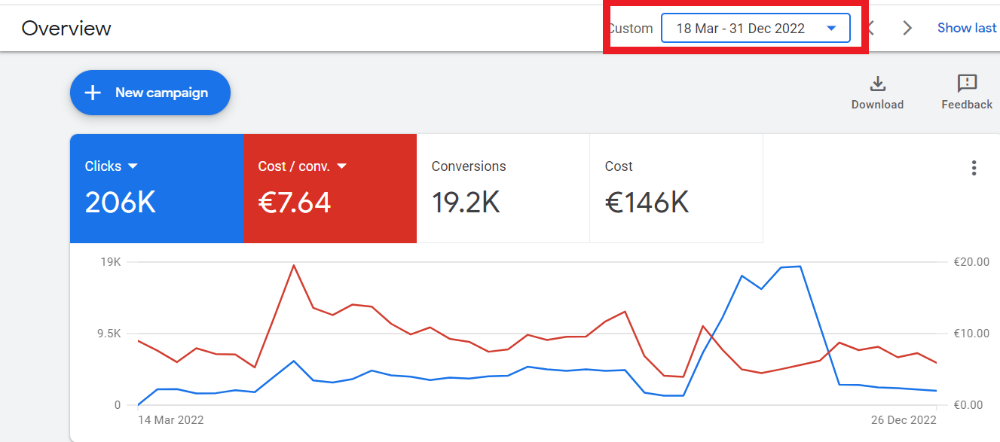

Generowanie Leadów: Kiedy Inwestycja Się Opłaca. Studium Przypadku 206 tys. Kliknięć i Wyjątkowy ROI

W świecie marketingu cyfrowego ostatecznym celem jest nie tylko uzyskanie widoczności, ale generowanie wymiernego zwrotu z inwestycji (ROI). Dla firm, które opierają się na rezerwacjach, spotkaniach i bezpośrednim kontakcie (telefony, WhatsApp), generowanie leadów jest siłą napędową. Obraz, który dziś analizujemy, jest dowodem na to, jak ukierunkowana i stale optymalizowana strategia może przekształcić skromny budżet w wysoce wydajną maszynę do pozyskiwania klientów.

Wykładniczy Wzrost Budżetu, Napędzany Wynikami
Patrząc na dane, widać ogromny sukces: 206 000 kliknięć i 19 200 konwersji (leadów) przy koszcie konwersji wynoszącym zaledwie 7,64 €. Jednak najbardziej imponujący jest proces, który doprowadził do tych liczb. Obraz pokazuje kampanię, której miesięczny budżet w ciągu zaledwie 3 miesięcy wzrósł z 2 000 € do 20 000 €. Ten wzrost nie był przypadkową decyzją, ale bezpośrednią konsekwencją osiągniętego sukcesu. Kiedy każda zainwestowana złotówka generuje kwalifikowane kontakty, decyzja o zwiększeniu budżetu staje się nie tylko logiczna, ale wręcz konieczna.
Filary Skutecznego Generowania Leadów
Taki wynik nie jest dziełem przypadku. To owoc skrupulatnej pracy i dobrze zdefiniowanej strategii, opartej na trzech podstawowych filarach:
1. Ciągłe Zarządzanie Słowami Kluczowymi:
Aby dotrzeć do odbiorców, którzy są naprawdę zainteresowani rezerwacją wizyty lub uzyskaniem informacji, kluczowe jest użycie precyzyjnych i trafnych słów kluczowych. Stałe monitorowanie i precyzyjny dobór zapytań wyszukiwania pozwoliły na przyciągnięcie wysokiej jakości ruchu, redukując marnotrawstwo i maksymalizując konwersje. Dzięki temu kliknięcia pochodziły od użytkowników o wysokim prawdopodobieństwie stania się kwalifikowanymi leadami, gotowymi do umówienia spotkania lub rozpoczęcia rozmowy.
2. Strategiczna Segmentacja Odbiorców
Nie wszystkie kliknięcia są sobie równe. Skuteczne generowanie leadów wymaga dotarcia do właściwej grupy odbiorców we właściwym czasie. Dzięki analizie danych i zastosowaniu segmentacji odbiorców (takich jak podobne grupy, odwiedzający witrynę lub użytkownicy o określonych zainteresowaniach), możliwe było wyświetlanie reklam osobom, które były najbardziej skłonne do konwersji. Takie podejście nie tylko poprawiło koszt konwersji, ale także zapewniło, że 19 200 pozyskanych leadów było rzeczywiście odpowiednich dla danego biznesu.
3. Doświadczenie Użytkownika (UX) na Stronie
Świetna kampania reklamowa jest bezużyteczna, jeśli strona internetowa nie jest na odpowiednim poziomie. W przypadku biznesów opartych na rezerwacjach, telefonach i czatach, doświadczenie użytkownika jest wszystkim. Łatwość, z jaką użytkownik może znaleźć numer telefonu, rozpocząć czat WhatsApp lub wypełnić formularz kontaktowy, ma kluczowe znaczenie. Zoptymalizowana strona internetowa z wyraźnymi „wezwaniami do działania” (call to action) i intuicyjną nawigacją przekształciła kliknięcia w leady, dopełniając proces zapoczątkowany przez kampanię reklamową i zapewniając, że znaczący ruch nie został zmarnowany.
Podsumowanie: Zwycięska Synergia Ruchu i Konwersji
Załączony obraz jednoznacznie dowodzi, że profesjonalnie zarządzane generowanie leadów nie jest kosztem, lecz wysoce dochodową inwestycją. Sukces tej kampanii, z budżetem zwiększonym 10-krotnie w ciągu kilku miesięcy, jest namacalnym dowodem na to, że staranne zarządzanie słowami kluczowymi, inteligentna segmentacja odbiorców i ciągła optymalizacja doświadczenia użytkownika na stronie to kluczowe składniki, aby przekształcić ruch w stały strumień kwalifikowanych kontaktów, a ostatecznie w nowych klientów dla Twojej firmy.